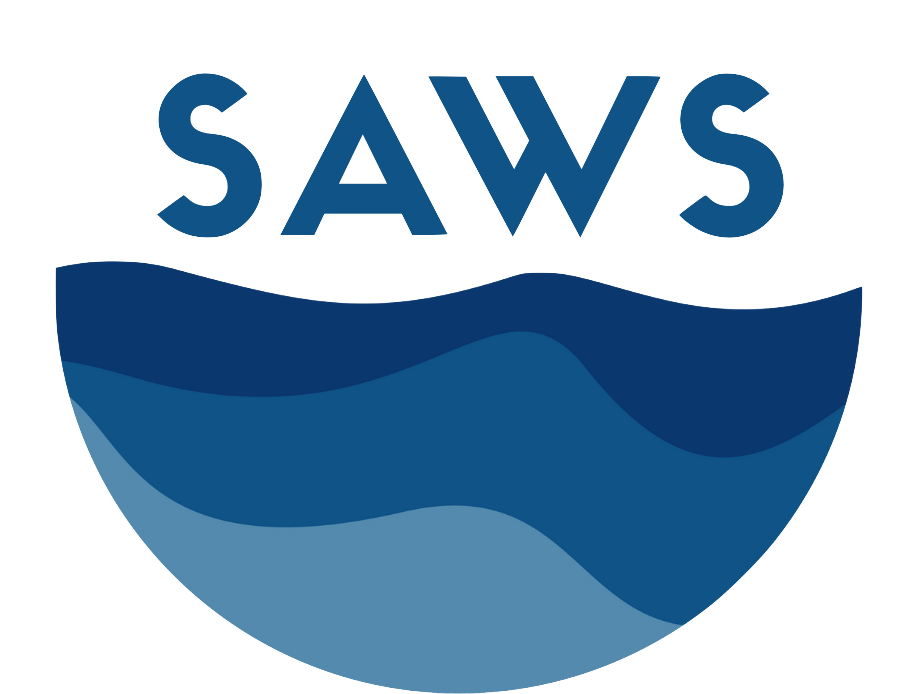

Projects

Team Members

Overview
Increasing water stress is forcing state and local water resource managers to evaluate non-traditional water supplies. Complicating this process is the fact that local political, economic, social, technical, legal, and environmental (PESTLE) contexts for tapping alternative source waters vary widely by geographic location. The screening of alternative water sources to secure American water supplies (SAWS) tool aims to provide a centralized data repository, analysis, and mapping tool for factors influencing adoption of non-traditional water supplies at the county scale. SAWS integrates these previously disparate PESTLE datasets into a centralized, uniform viability assessment framework to enable comparisons across different water supplies and geographic regions. SAWS supports a regional supply portfolio optimization, comparative supply viability assessments, and goal prioritization for technological development, among other analyses. Finally, the ability to import new datasets, combined with native flexibility in how viability metrics are calculated and weighted, allows users to perform sensitivity analysis and assess the value of additional data collection. SAWS was designed to provide policy makers, water resource managers, consulting engineers, and other stakeholders with a common platform for gathering, interpreting, and visualizing pathways to enhanced water security, resilience, and affordability.
Links
Supported By
- National Science Foundation
- ExxonMobil
Publications
No publications listed yet.